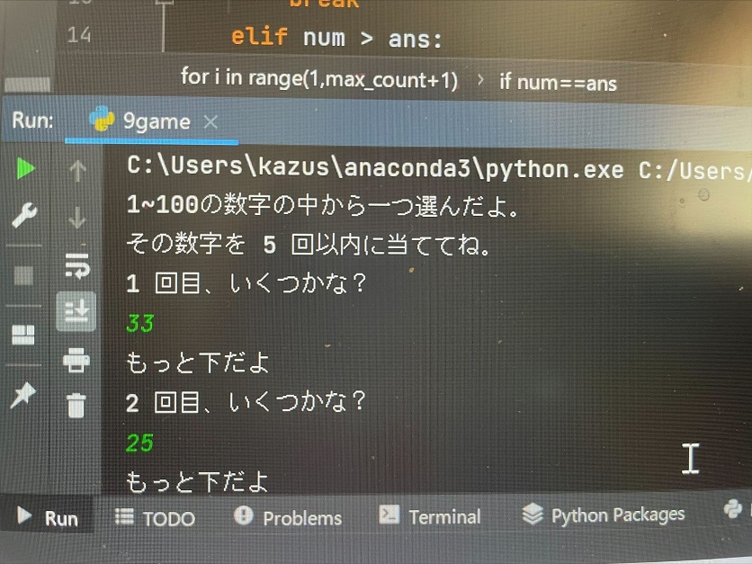
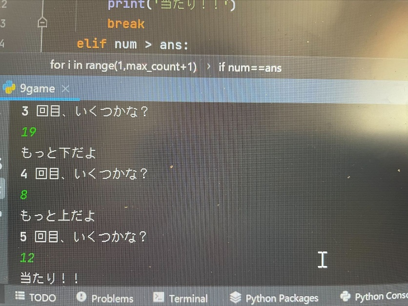

数当てゲーム
ゲームの説明
1～100の中から1つ数字を選んだ状態からスタートします。
このゲームを利用している人に選ばれている数字を当ててもらう。
回答のチャンスは5回まで。
1～100と幅がものすごく広いので難易度はかなり高い。
実際に作ったソースコード
- import random
- ans = random.randint(1,100)
- max_count=5
- print('1~100の数字の中から一つ選んだ。')
- print('その数字を',max_count,'回以内に当てなさい。')
- for i in range(1,max_count+1):
- print(i,'回目の数字は？')
- num=int(input())
- if num==ans:
- print('当たり！！')
- break
- elif num > ans:
- print('もっと下の数字だよ')
- else:
- print('もっと上の数字だよ')
- else:
- print('残念〜正解は',ans,'です。')
今回は、random形式でゲームを作りました。
randoma.randint(1.100)で1～100まで数字の選ぶ幅を決めることができます。
そして、max_count=5で何回目まで回答することができるのかを決め、print(' ')で伝えたい文章を表示させる。
if文は、条件分岐を行うための方法。（プログラム中である条件が満たされているかによって、次に実行するプログラミング上の位置を変化させること）
回答が当たりだった場合と違う場合のどちらとも書いておかなければならない。
＜当たりだった場合＞
if num==ans:
print('当たり！')
break
---------------------------------------------------------
＜違う場合（ヒント）＞
数字が大きかった時は…
elif num > ans:
print('もっと下の数字だよ ')
数字が小さかった時は…
else:
print('もっと上の数字だよ')
解答を表示するときは…
else:
print('残念～正解は',ans'です。)
---------------------------------------------------------
*覚えておくこと*
違う場合はelse:
合っている場合は== :
遊んでる動画
当たりの時の画像


4回目ぐらいでやっと当たりが出ました！！
かなり、難しかったです。
反省としては、もう少し選ぶ数字の幅を小さくして難易度を下げれば良かったと思いました。